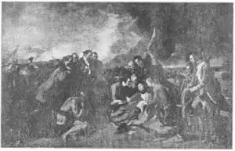
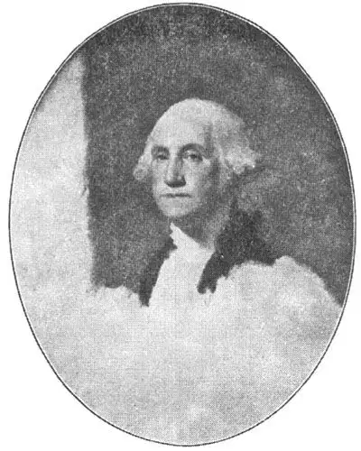

28
EARLY AMERICANS
早期美国画家

NOW we come to painting in America. I’ll have to tell you right at the beginning that there is much more American painting, and that there are many more American artists, than I have room to tell you about in this book. America has had artists since before the American Revolution and to–day we have as many good painters at work as any country in the world—perhaps more.
The first American artist to become really famous was Benjamin West. Benjamin West’s family lived in Pennsylvania when the woods were still full of Indians. There he was born and there he grew up. As his family were Quakers, the Indians were friendly to them, for the Quakers had made a treaty with the Indians to buy their land from them instead of just taking it by force or by cheating.
When Benjamin West was a boy he loved to draw pictures. The Indians were pleased when he drew pictures of them. Of course he didn’t have any paints or paint brushes nor even any pictures to look at. There weren’t such things in the little frontier village where he lived. So the boy was delighted one day when the Indians gave him some of the yellow and red paint that they used to paint their faces with. Benjamin ran home and showed the paints to his mother. Then his mother gave him some bluing which she used in washing clothes. Now he had yellow, red and blue paint, but no paint brushes. How do you think he got a brush? He used the cat!
Yes, he cut some hairs off the cat’s tail and made them into a paint brush. When the first brush wore out, he got some more hairs from the cat. After a while the poor cat had hardly any hair left on her tail and was beginning to look very ragged in other places. Benjamin’s father thought the cat had the mange.
When Benjamin West grew up he went to live in Philadelphia, and there he worked hard to become a good painter. Then he decided to go to Europe where he could see and study famous paintings. When he reached Rome he was taken to see a statue of a Greek god called the Apollo Belvedere. (See the picture NO.39–1 in Chapter 39)
“It looks like a Mohawk warrior,” he said, thinking of the strong and graceful Indian braves of Pennsylvania.
West then went to England and settled in London. He became a very popular painter. The king, George Ⅲ, liked him and his work so much that he made him court painter. And so Benjamin West never returned to America. But he always welcomed American artists who came to London and was very generous and helpful to them. In fact, his studio was a kind of school for young men learning to paint, and many well–known American painters studied there. He was like a father to them all.
West’s pictures often were very large and generally were filled with many figures, though some were smaller portraits. They were admired by every one and some people even said they promised to be as great as the paintings of Michelangelo. Nowadays we think West’s paintings are not really very great paintings, but isn’t it pleasant to hear of an artist’s pictures being so well thought of while he was alive, and could enjoy their success? Many painters have had to struggle all their days as nobodies, with their pictures not admired until after those painters died, so that I’m glad the opposite happened to this painter.
One of West’s best–known paintings is “The Death of General Wolfe.” General Wolfe was leader of the British soldiers when they fought the French at Quebec to decide whether France or England should own Canada. The British won, but General Wolfe was shot. Both the French and English were helped by Indian warriors. Notice the Indian in the picture. West grew up with Indians and so could paint them even in England with the nearest Indian three thousand miles away.

No.28-1 THE DEATH OF GENERAL WOLFE（《沃尔夫上校之死》） WEST（韦斯特 作）
The picture caused a great stir in London, because the soldiers in it are dressed in their regular uniforms. In England it was thought that all pictures of history should show people dressed as Greeks or Romans. Even the king told West he oughtn’t to put his figures in such modern costumes. But when the picture was finished every one, including the king, said West was right. After that, artists painted their figures in the clothes the people they painted really wore.
One of the young Americans who studied under West in London was Gilbert Stuart. He was born and raised in New England before the Revolution. He thought he could do better in old England, so he traveled to London. There he became a painter of really fine portraits. People then thought Benjamin West a much better painter than we now think he was, but Gilbert Stuart’s paintings are just as well thought of to–day as they were when he painted them.
After living many years in England, Gilbert Stuart came back to America. It was now the United States of America, for the Revolution had been fought and won. Stuart had come back, he said, to paint the portrait of George Washington, whom he greatly admired.
Washington posed for three portraits by Gilbert Stuart. The last of these three is the most famous and best–loved picture of Washington that we have. It is called the Athenaeum portrait because it belongs to the Athenaeum Club in Boston. You can see a small copy of it on many of our postage stamps, for instance on the three–cent stamp of 1932 and 1933.
You may wonder why this portrait on the next page seems unfinished. The reason is that Gilbert Stuart liked it so well that he wanted to keep it. He had promised the portrait to Washington when it was finished, but it was never finished. The artist couldn’t bear to finish it! Instead of the original, Washington agreed to take a copy that Stuart made of it for him. As a matter of fact the artist painted about fifty copies of the portrait from time to time and sold a copy whenever he needed money.
Gilbert Stuart went to live in Boston and never returned to England. He painted five other Presidents besides Washington and so is sometimes called the Painter of Presidents.
Now, there were, of course, other American painters in the early days of the United States. Most of them were portrait painters, because so many people wanted portraits. There were still no cameras to take photographs. It is from the portraits of these early painters that we know what the famous Americans and beautiful women of those days looked like.
These early portraits have become very valuable, so that many of them are now in museums. Some, however, still belong to the families whose ancestors had their portraits painted. If some one ever shows you a portrait by Copley, Sully, Malbone, Trumbull, or one of the Peales be sure to look at it carefully and with respect, for it is the work of one of the famous early painters of America.

No.28-2 THE ATHENÆ
UM PORTRAIT OF WASHINGTON（《雅典娜的华盛顿画像》）STUART（斯图尔特 作）
Courtesy of The University Prints
【中文阅读】
现在，我们来了解美国的绘画。我首先要说，美国的绘画作品和画家实在太多了，所以本书根本就不够介绍。早在独立战争前，美国就已经出现了许多画家。现在美国拥有同世界其他国家一样多的优秀画家——或许更多。
第一位真正出名的美国画家是本杰明·韦斯特。本杰明·韦斯特一家住在宾夕法尼亚，本杰明生在那儿，长在那儿。那时候宾夕法尼亚仍然住着许多印第安人。本杰明一家都是贵格会教徒，所以印第安人对他们很友善。这是因为贵格会和印第安人达成协议，他们从印第安人那里购买土地，而不是靠武力或者欺骗手段获得。
本杰明·韦斯特从小就喜欢画画。印第安人非常乐意找他画像。当然，那时候他没有颜料和画笔，甚至没有画可供参考。在他生活的西部小村庄根本就没有这些东西。有一天，印第安人给了他一些他们涂脸用的黄、红颜料，这可把小男孩给乐坏了。本杰明飞奔回家，把颜料拿给他妈妈看。后来，他母亲给了他一些洗衣服用的蓝色漂白剂。这样，他有了黄色、红色和蓝色的颜料，只是还没有画笔。你知道他怎么得到画笔的吗？他用的是猫毛！
不错，他从猫的尾巴上剪下一些毛须，然后制成一支画笔。在第一支毛笔用坏后，本杰明又从猫尾巴上剪下更多的毛。过了一段时间，这只可怜猫咪尾巴上的毛几乎都剪光了，而身上其他部位的毛发也开始变得参差不齐。本杰明的父亲还以为这猫 是得了兽疥癣呢。
长大后，本杰明·韦斯特搬到了费城，他在那里努力画画，想成为一名优秀的画家。后来，他决定去欧洲，因为他可以在那欣赏和研究很多名画。到达罗马后，有人带他去观赏一位希腊神的雕塑，叫做《阿波罗》（图39–1）。
“它看起来就像一位莫霍克族的武士。”他说道，因为他想起了宾夕法尼亚那些健壮优美的印第安勇士。
后来，韦斯特去了英国，在伦敦安顿下来。他开始深受欢迎。英王乔治三世非常欣赏他和他的画，把他聘为宫廷画家。所以，从此以后，本杰明·韦斯特再也没有回过美国。不过，如果有美国画家来到英国，他总是给予热忱欢迎和慷慨帮助。事实上，他的画室就是供年轻人学画的学校，有许多著名的美国画家都曾来这里学习过。韦斯特像父亲一样对待大家。
虽然韦斯特也画一些小的肖像画，但他的画通常都很大而且画面上人物众多。人人都欣赏他的画，而且有人甚至说韦斯特的画可以同米开朗基罗的画相媲美。现在，我们可能觉得韦斯特的画算不上真正了不起的作品了。不过，一位画家的作品能在他活着的时候就获得如此好评和成功，这难道听起来不是一件很棒的事情吗？许多画家勤奋一生却默默无闻，他们的作品直到死后才得到肯定。所以，我很欣慰，这位画家不是这样。
韦斯特的名画中有幅叫《沃尔夫上校之死》。沃尔夫上校是一位英国军官，那时候英国和法国在魁北克省争夺加拿大的所有权。最后，英国获胜了，不过沃尔夫上校却在战争中被射死。英法双方都得到了印第安勇士的帮助。请留意下图中的印第安人。韦斯特从小就和印第安人一起长大，所以即使他远在英国，离他最近的印第安部落也在三千英里之外的地方，他仍然能很好地将他们画下来。
当时这幅画在伦敦引起了极大的轰动，因为画中的士兵们都穿着军队制服。而那时候，英国人普遍认为所有历史题材绘画中的人物应该穿希腊或罗马服装。甚至连国王都对韦斯特说他不应该让画中的人物穿上这样的现代服装。但是当画完成后，包括国王在内的所有人都说韦斯特的做法是正确的。从那以后，画中人物本来应该穿什么衣服，画家就画什么衣服。
在伦敦，有位美国年轻人在韦斯特门下学画，他叫吉尔伯特·斯图尔特。吉尔伯特·斯图尔特出生在独立战争前的新英格兰，并且在那儿长大。他觉得自己在英国能有更好的发展，于是启程去了伦敦。他后来在英国成为一名出色的肖像画家。那时候人们对本杰明·韦斯特的评价比我们现在对他的评价要高得多，但是吉尔伯特·斯图尔特的绘画却始终如一地得到好评。
在英国生活多年后，吉尔伯特·斯图尔特回到美国。那时候的美国已经取得了独立战争的胜利，成为一个独立的国家。斯图尔特非常地崇拜乔治·华盛顿，并说要为华盛顿画像。
斯图尔特为华盛顿画了三幅画像，其中最后一幅最为出名而且最受人们的喜爱。这幅画像叫做《雅典娜画像》，因为它属于波士顿的雅典娜俱乐部。你可以在我们许 多邮票上看到这幅画像的小型复印张，比如在美国1932年和1933年的三分钱邮票上就能看到。
你可能会觉得奇怪，为什么下图上的肖像画看起来好像没有完成呢？原来吉尔伯特·斯图尔特实在太喜欢这幅画了，所以就想为自己留下这画。可他曾承诺画完就送给华盛顿，所以决不能画完，也不忍心画完！最终华盛顿没有索要原作，而是同意接受吉尔伯特·斯图尔特为他制作的一幅临摹。事实上，斯图尔特一共差不多将这幅画临摹了五十幅。他一旦缺钱就卖掉一幅。
吉尔伯特·斯图尔特后来定居波士顿，而且再也没有回过英国。除了华盛顿外，他还给其他五位总统画过像。所以，有时候人们称他“总统画师”。
当然，美国早期还有许多其他的画家。因为当时很多人想要画肖像画，所以他们大多是肖像画画家。那时候还没有照相机可以照相，所以我们正是从这些早期画家的肖像画中了解到了那个时期美国的名人和漂亮女士是什么样子的。
这些早期的肖像画已经变得非常珍贵，它们现在大多珍藏在博物馆里。不过，有些画仍然归某些家族所有，因为画的是他们的祖先。如果有人向你展示科普利、萨利、马尔布恩、特朗布尔或皮尔家族中某某的肖像画，你一定要肃然起敬，仔细观看，因为这画是出自一位美国早期名画家之手哦。